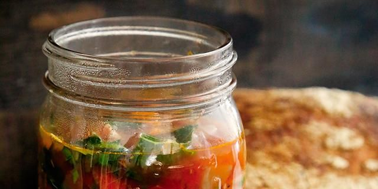

Minestrone Soup

Description
Time to clean your fridge out and warm up with a big bowl of soup. Enjoy with crusty bread if you like to eat in style
Ingredients
- 2 teaspoons olive oil
- 1 onion, chopped
- 2 carrots, slice into half moons
- 3 ribs of celery, chopped
- 1 large potato or turnip, cut into dice-size pieces
- 2 teaspoons minced fresh rosemary
- 3 cloves garlic, minced
- Pinch of red pepper flakes
- 1 bay leaf
- 1 can (14.5 ounces) low-salt diced tomatoes
- 1/2 cup dried black lentils
- 7 cups vegetable broth
- 1/4 teaspoon salt
- 1 cup small pasta shapes, like shells or stars or whatever
- 5 cup shredded green cabbage or kale
- 2 teaspoons red wine vinegar
- Juice of 1/2 lemon
- 1/3 cup chopped fresh parsley
- 1/4 cup minced fresh basil
- Ground pepper
Steps
- Heat oil in large soup pot over medium heat
- Add onion, carrot, and celery. Saute until onion starts to look golden brown, 3 to 5 minutes
- Add the potato, rosemary, garlic, pepper flakes and bay leaf. Cook for another 30 seconds
- Add the diced tomatoes and lentils and cook for another 30 seconds
- Pour in all the broth and let it come to a simmer
- Reduce heat and let it go at a gentle pace until the lentils are almost cooked and the potato is tender, about 15 minutes
- Add salt, pasta, and cabbage (if using kale, don't add yet)
- Simmer until the pasta is cooked, 5 to 10 minutes (if using kale, fold into pot after the paste is cooked, and let simmer another 2 minutes)
- Add the vinegar and lemon juice, stir well, and remove fromt the heat
- Fold in the parsley and basil, let pot sit for a minute or two.
- Pull out the bay leaf and serve right away
- Add salt, pepper or rosemary to taste